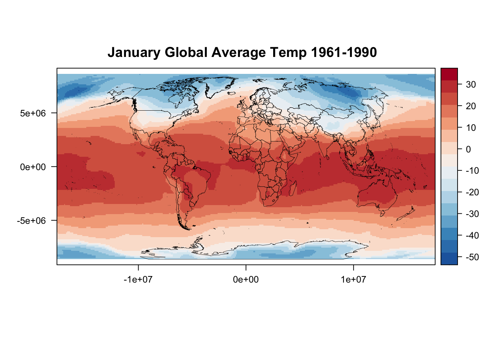
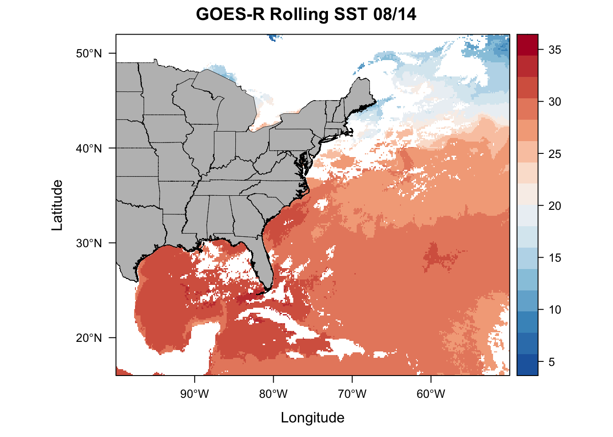
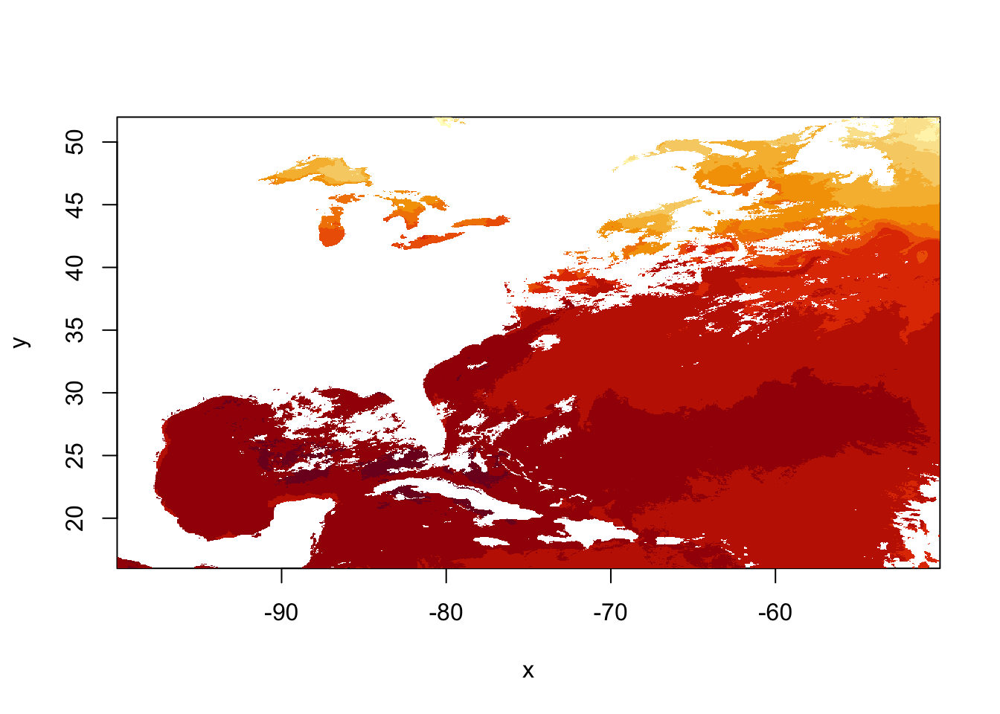
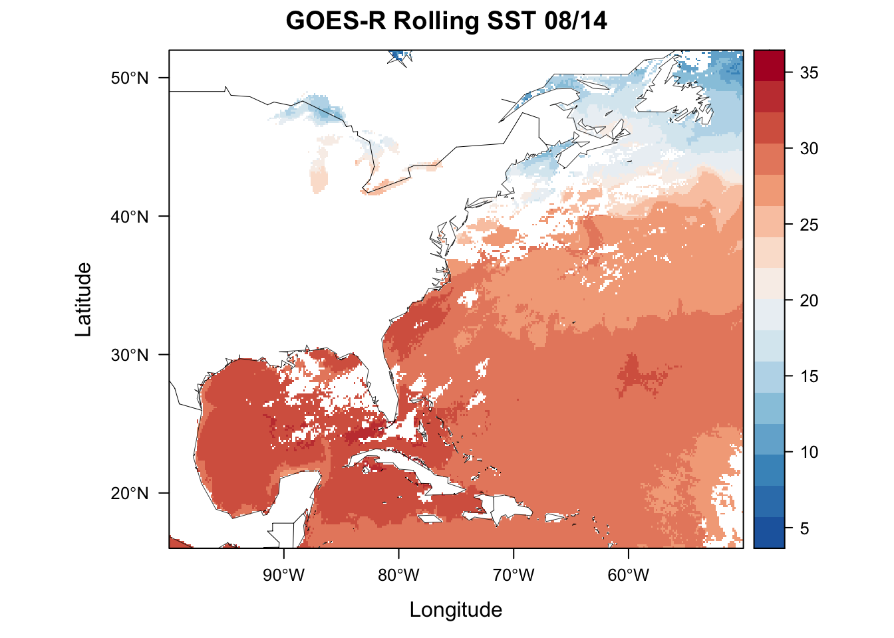
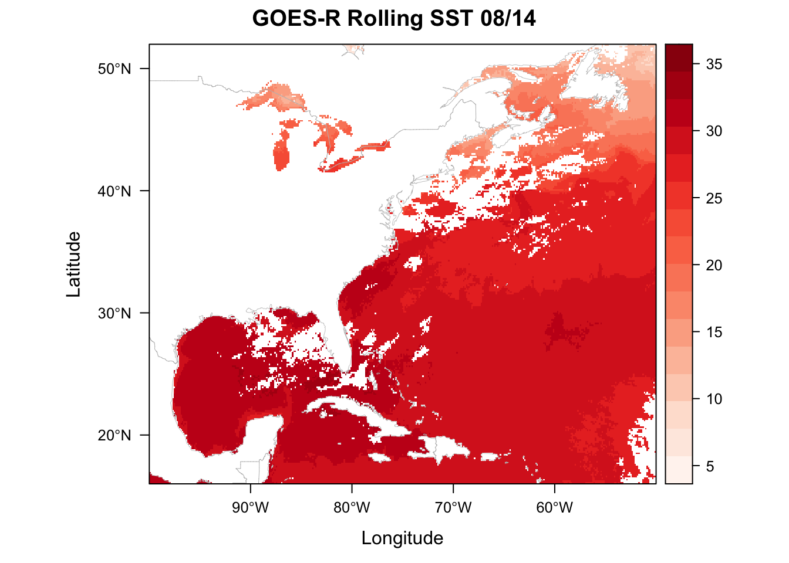
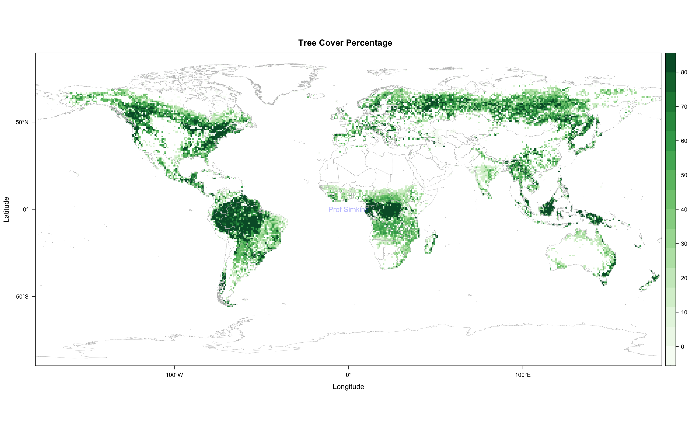

8 Oceanography & Global Tree Cover
This week we’ll use a different dataset from the GOES-16 satellite to explore new coding practices. We’ll take what we have learned from the example and apply it to a global tree cover dataset. First, let’s cover an important skill - understanding the paste0() function.
8.1 Paste0()
Last week we covered the for loop which is an essential programming skill. We also touched on the paste0() function, but this is incredibly useful and should be expanded upon. paste0() is the sister function of paste(), who’s cousin is sprintf() . It depends on preference, but most coders I know gravitate towards paste0(). Let’s check out all 3.
## [1] "file number 32"## [1] "file_number_32"## [1] "filenumber32"## [1] "file number 32"# sprintf example 2
person <-"Grover"
action <-"flying"
message(sprintf("On %s I realized %s was...\n%s by the street", Sys.Date(), person, action))## On 2020-09-01 I realized Grover was...
## flying by the street# Notice that paste() is limiting because the separating character is not always present between
# each string you're concatenating
# Let's use paste0 here
fileList <- c('filename1', 'filename2', 'filename3', 'filename4')
dateFolder <- c('0813', '0814', '0815', '0816')
homeDir <- "~/Documents/"
pathList <- list()
for (i in 1:length(fileList)){
print(i)
tempString <- paste0(homeDir, dateFolder[i], '/', fileList[i])
pathList[i] <- tempString
}## [1] 1
## [1] 2
## [1] 3
## [1] 4## [[1]]
## [1] "~/Documents/0813/filename1"
##
## [[2]]
## [1] "~/Documents/0814/filename2"
##
## [[3]]
## [1] "~/Documents/0815/filename3"
##
## [[4]]
## [1] "~/Documents/0816/filename4"## [1] "~/Documents/0813/filename1"# Now let's rewrite using sprintf
fileList <- c('filename1', 'filename2', 'filename3', 'filename4')
dateFolder <- c('0813', '0814', '0815', '0816')
homeDir <- "~/Documents/"
pathList <- list()
pathList <- sprintf("%s%s/%s", homeDir, dateFolder, fileList)
pathList## [1] "~/Documents/0813/filename1" "~/Documents/0814/filename2"
## [3] "~/Documents/0815/filename3" "~/Documents/0816/filename4"## [1] "~/Documents/0813/filename1"#sprintf is a very useful and quick function for combining various strings into longer strings
#but paste0 allows you a little more freedom and is slightly more intuitiveDebug and fix the following code:
# Let's use paste0 here
fileList <- c('sstData20190912', 'sstData20190913', 'sstData20190914', 'sstData20190915')
dateFolder <- seq(0912, 0915, 1)
homeDir <- "~/Documents/"
pathList <- list()
for (i in fileList){
print(i)
tempString <- paste0(homeDir, dateFolder[i], '/', i)
pathList[i] <- tempString
}
pathList
pathList[[1]]The final pathList[[1]] should look like this…
"~/Documents/0912/sstData20190912"
8.2 Rasters
Rasters offer us a 2 dimensional dataset (matrix) of data with geospatial coordinates. Rasters can come in a variety of filetypes including netCDF, GeoTIFF, CSV (if they come in CSV, they’ll be massive - this is an inefficient datatype), etc. We’ll be looking at the GOES-16 Rolling 1 Day average datafile - GOES_R_ROLLING_1DAY_20190814.nc. The GOES-16 Satellite records sea surface temperatures every hour. A rolling 1 day is an average of the previous 24 hours of record of sea surface temperature (and this dataset is created by CEMA here at UD).
library(maptools)
library(sp)
library(ncdf4)
library(raster)
library(rasterVis)
library(RColorBrewer)
ncFile <- nc_open("/Users/james/Documents/Github/geog473-673/datasets/GOES_R_ROLLING_1DAY_20190814.nc")
sstGoes <- ncvar_get(ncFile, varid = "sst")
sstRast <- raster(sstGoes)
# plot using quick 'image' function from raster
image(sstRast)
# netcdf stores data backwards, so to convert it to raster we need to transpose it
sstRast <- t(sstRast)
# plot using quick 'image' function from raster
image(sstRast)
# now we see that the data is just upside down, so we use the flip() function
sstRast <- flip(sstRast, 2)
# plot using quick 'image' function from raster
image(sstRast)
## class : RasterLayer
## dimensions : 1989, 2778, 5525442 (nrow, ncol, ncell)
## resolution : 0.0003599712, 0.0005027652 (x, y)
## extent : 0, 1, 0, 1 (xmin, xmax, ymin, ymax)
## crs : NA
## source : memory
## names : layer
## values : 5.344696, 34.9397 (min, max)# notice that the extent and crs information are wrong/not included so let's fix this
lat = ncvar_get(ncFile, "latitude")
lon = ncvar_get(ncFile, "longitude")
# define new extents for the raster
extent(sstRast) = c(min(lon), max(lon), min(lat), max(lat))
# define the proj4 projection string
crs(sstRast) = "+proj=longlat +datum=WGS84 +no_defs "
sstRast## class : RasterLayer
## dimensions : 1989, 2778, 5525442 (nrow, ncol, ncell)
## resolution : 0.01799352, 0.0180909 (x, y)
## extent : -99.99015, -50.00415, 16.00283, 51.98563 (xmin, xmax, ymin, ymax)
## crs : +proj=longlat +datum=WGS84 +no_defs +ellps=WGS84 +towgs84=0,0,0
## source : memory
## names : layer
## values : 5.344696, 34.9397 (min, max)

# USA shapefiles via the getData function
usa <- getData('GADM', country = 'USA', level = 1)
# Throw together the usa spatial polygons data frame
plt <- levelplot(sstRast, margin=F, par.settings=BuRdTheme,
main="GOES-R Rolling SST 08/14")
plt + layer(sp.polygons(usa, col='black',fill='grey', lwd=0.4))
# Now let's do the same with geotiff
tifFile = "/Users/james/Documents/Github/geog473-673/datasets/goesSST.tif"
sstRast = raster(tifFile)
# Quick image using raster's image plot generator function
image(sstRast)
# Now let's load a base dataset of world maps that R already has stored
data(wrld_simpl)
plt <- levelplot(sstRast, margin=F, par.settings=BuRdTheme,
main="GOES-R Rolling SST 08/14")
plt + layer(sp.lines(wrld_simpl, col='black', lwd=0.4))
# Let's do the same plot but with a custom shapefile
# note that even though we only point the function to the '.shp' file, the '.shx' and '.dbf' need to be in the same folder for this to work.
world.shp <- rgdal::readOGR("/Users/james/Documents/Github/geog473-673/datasets/world_shpfiles/world.shp")## OGR data source with driver: ESRI Shapefile
## Source: "/Users/james/Documents/Github/geog473-673/datasets/world_shpfiles/world.shp", layer: "world"
## with 252 features
## It has 2 fields# add custom color theme using brewer.pal from the package RColorBrewer and setting the rasterTheme
mapTheme <- rasterTheme(region=brewer.pal(8,"Reds"))
plt <- levelplot(sstRast, margin=F, par.settings=mapTheme,
main="GOES-R Rolling SST 08/14")
plt + layer(sp.lines(world.shp, col='gray', lwd=0.4))
8.3 Assignment
Download treecov.nc from the datasets folder
Open tree cover % as a variable, remove bad values (i.e. percentages outside of 0 and 100).
Plot tree cover variable using a green theme. Be sure to add coastlines via your choice of underlying dataset. Ensure correct latitude/longitudes are displayed. Add title.
Submit resulting image to Canvas assignment 4
## OGR data source with driver: ESRI Shapefile
## Source: "/Users/james/Documents/Github/geog473-673/datasets/world_shpfiles/world.shp", layer: "world"
## with 252 features
## It has 2 fields